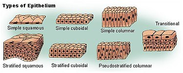

Introduction:
One or more layers of cells that cover the outer surface (of the body) or line the luminal surface of tubular structures and cavities of the body are called Epithelia (singular = Epithelium)
characteristic features of epithelial tissue
- Very cellular with little intercellular space(20nm)
- Usually avascular
- Cells rest on a basement membrane
- Cells show polarity
- Cells may display surface modifications
Function
- Protection
- Absorption
- Secretion
- Exchange
classification of epithelia
An epithelium may consist of only one layer of cells when it is called a Unilayered or simple epithelium.Alternatively, it may be multilayered (stratified) or it can be pseudostratified.
-
Unilayered (simple) epithelia: Single layer of cells resting on a basement membrane.It may be further classified according to the shape of the cells constituting them.
- When the cells are flattened, their height being very little as compared to their width. Such an epithelium is called squamous epithelium
- When the height and width of the cells of the epithelium are more or less equal (i.e. they look like squares in section) it is described as a cuboidal epithelium.
- When the height of the cells of the epithelium is distinctly greater than their width, it is described as a columnar epithelium.
- Pseudostratified columnar epithelia:In true sense this is a simple pithelium as each cell rests on the basement membrane. This epithelium gives an appearance of a multilayered epithelium due to unequal height and shape of the cells.
-
Multilayered (stratified) epithelia: Epithelia which consist of multiple layers with basal layers resting onthe basement membrane.The epithelium is named according to the shape of cells of the most superficial layer.
-
Stratifiel squamous:The deeper layer are columnar,and in proceeding toward the surface of the epithelium the cells become increasingly flattened (or squamous). It may be noted that all cells in this kind of epithelium are not squamous.
- Stratified cuboidal:The surface cells are cuboidal in shape.
- Stratified columnar:The surface cells are columnar in shape.
- Transitional epithelium:In this type of multilayered epithelium all layers are made up of cuboidal,polygonal,or round cells.The cells toward the surface of the epithelium are round.As transitional epithelium is confined to the urinary tract, it is also called urothelium.
-
Stratifiel squamous:The deeper layer are columnar,and in proceeding toward the surface of the epithelium the cells become increasingly flattened (or squamous). It may be noted that all cells in this kind of epithelium are not squamous.